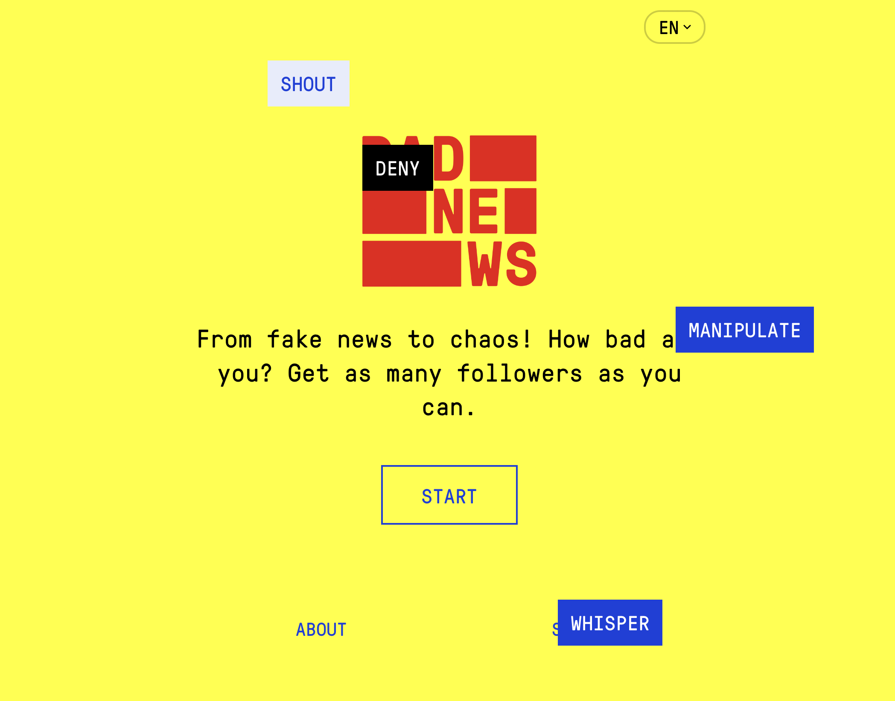

today i experimented...

experimented with a gaming website called bad news that focuses on teaching people about disinformation tactics. i liked the way the game was structured as i’m put into the role of a fake news creator with my goal being to gain as many followers as possible and build fake credibility. it made me aware of the manipulation techniques involved in creating fake news.